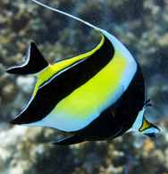

Try to navigate through the presentation with your voice.
Recognized:
Welcome to my first Presentation!
The MobileNet model labeled this as ... with a confidence of ....

Lemon fish
It is found in warm-temperate to tropical waters of the West and East Atlantic Ocean, throughout the Caribbean, and in the Indian Ocean off the coast of India.
This is what it looks like
The MobileNet model labeled this as ... with a confidence of ....
I also like lions
This is my favorite lion!
The MobileNet model labeled this as ... with a confidence of ....